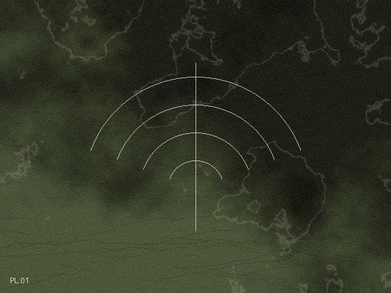
Harbor
Family hub. Chores, check-ins, calm waters.
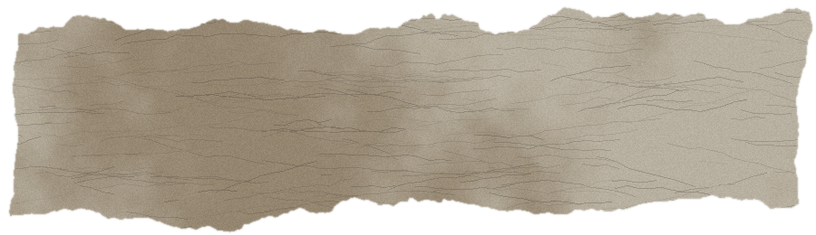
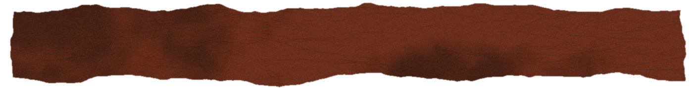
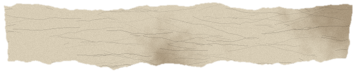
fig. 01 / reel one / chicago
a small studio of
boutique code shop
“nothing is impossible, improbable maybe.”
scroll slow · scroll fast · let it settle
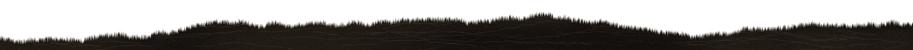
A few pieces from the back room. Every one gets its own page, its own trick, its own weather.

Family hub. Chores, check-ins, calm waters.
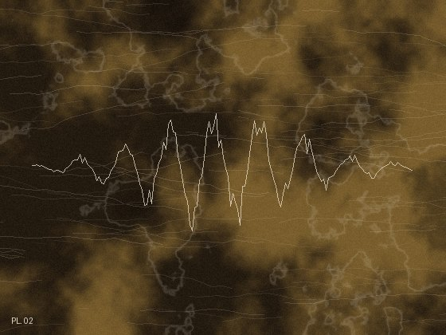
Pocket audio editor with attitude.
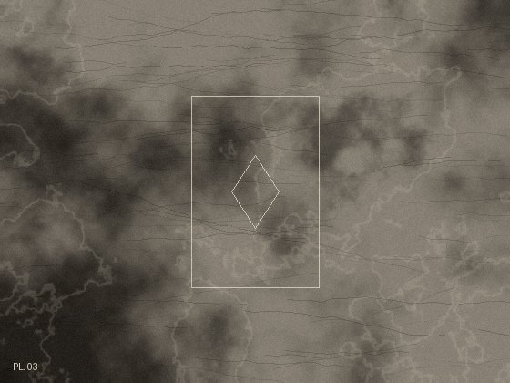
Chaos generator for your DAW.
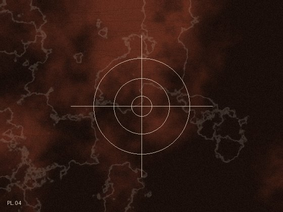
Hide the hit, land the hit.
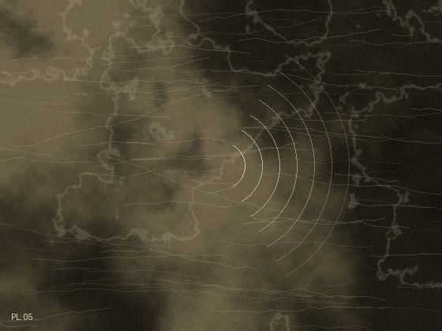
Rip it. Hold it. Ship it.
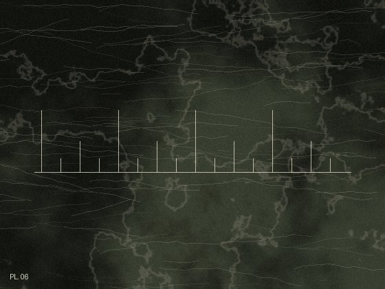
An auto-drummer that never shows up late.
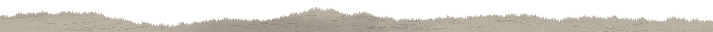
hand-built · small batch · no templates